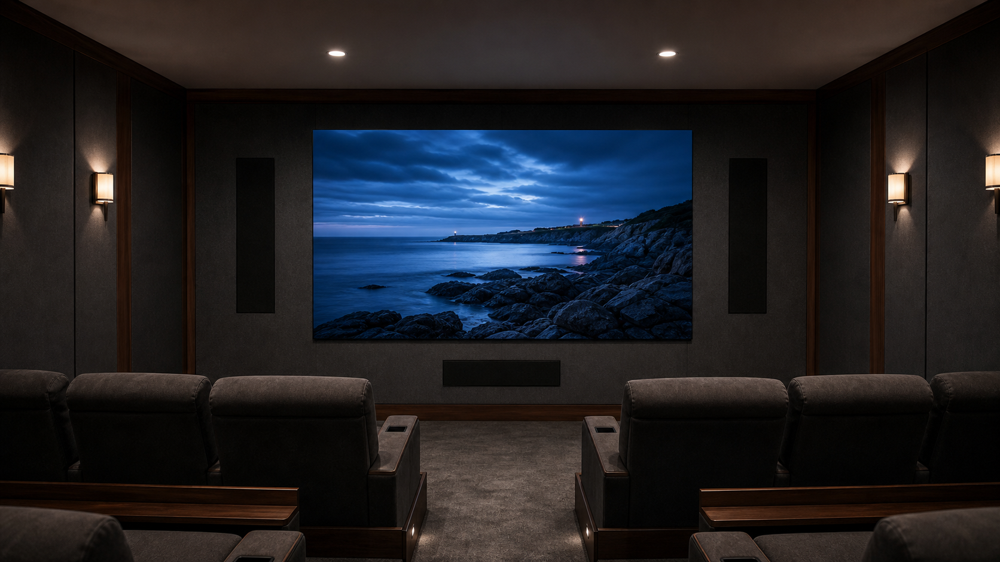

MicroLED makes sense for a home theater when the room calls for cinematic scale, high contrast without a projection path, consistent image quality in controlled or mixed light, and a display that can be sized as part of the architecture. Choosing the right wall is not a matter of selecting diagonal size alone. The room geometry, closest seat, pixel pitch, brightness target, motion demands, audio layout, source path, service access, and final calibration must work as one system.
That system-level view is important because a private cinema is not assembled around a single specification. CEDIA's professional design resources treat video, audio, data, heat, lighting, documentation, and room layout as coordinated disciplines. Opal follows the same principle from the display side: we engineer the image platform, while an authorized dealer or integrator specifies and installs it within the completed room.
When MicroLED Makes Sense for a Home Theater
A direct-view MicroLED wall produces its own light. There is no projector throw path to protect, no ceiling-mounted optical system, and no need to keep people or furnishings out of the light beam. That makes the category especially useful when the design calls for a very large image, a clean front elevation, controlled architectural proportions, or reliable performance when some ambient light remains in the room.
MicroLED also changes the planning sequence. The display is assembled from modular panels, so the active image can follow a standard 16:9 format or a custom proportion. Opal offers standard 16:9 sizes from 110 to 270 inches and can engineer custom sizes and aspect ratios. The design team can therefore start with the wall, seating, and content rather than forcing the room around one fixed display chassis.
The tradeoff is that a MicroLED wall should be treated as architecture. Structure, tolerances, speaker locations, electrical and signal pathways, equipment space, ventilation, finish transitions, and access for future service belong in the drawings early. An authorized integrator coordinates those requirements with the architect, interior designer, builder, lighting designer, and acoustician.
Start With Room Geometry, Image Width, and Seating
The diagonal measurement is a result, not the starting point. First define the usable wall width and height after millwork, acoustic treatment, speaker zones, edge clearances, and service conditions are accounted for. Then establish the content formats that matter. A standard 16:9 wall is direct and familiar for mixed content. A wider custom canvas can suit cinema-first rooms, but the team must decide how 16:9 programs will be presented on that surface.
Next, place every seat. The closest seat drives pixel-pitch scrutiny, while the farthest and most off-axis seats test whether the image remains large and comfortable enough across the room. Row risers, reclining positions, head clearance, aisle locations, and the vertical position of the wall all affect sightlines. Our guide to pixel pitch and viewing distance explains the relationship in more detail, but the final selection should be demonstrated at the actual closest-seat distance whenever possible.
Specifier Note: Define the active image before the surrounding finish
Record the exact active image width, height, aspect ratio, bottom edge, centerline, and finished-wall opening. The architect and integrator should agree on those dimensions before millwork, acoustic panels, speaker grilles, or trim details are released.
Choose Pixel Pitch From the Closest Critical Seat
Pixel pitch is the center-to-center spacing between adjacent pixels. A finer pitch places more pixels into a given physical area and becomes more important as the viewer moves closer. It should be selected from the room's closest critical seat, not from a generic distance rule or the farthest row.
For residential Opal walls, the current specification range includes 0.7 mm on Onyx, 0.9 mm on Boulder and Crystal, and 1.2 mm on Crystal. Onyx pairs its 0.7 mm pitch with NanoPix for ultra-close 4K viewing. Boulder uses a 0.9 mm pitch with SilkStream motion technology. Crystal provides premium residential configurations at 0.9 mm and 1.2 mm. These are different specification paths for different room conditions, not a simple ranking.
A useful showroom test uses real content at the planned image size and seat distance. Review faces, fine textures, slow gradients, subtitles, camera pans, dark material, and bright highlights. Then move laterally to the side seats. The right pitch is the one that preserves a coherent image from the actual viewing positions while supporting the intended wall dimensions.
Set Brightness for the Room, Not the Maximum Number
Brightness should be designed around ambient light, wall and ceiling reflectance, screen size, content, and viewing duration. A private cinema with dark finishes and controlled lighting needs a different operating target from a media room that remains open to adjacent spaces. More available luminance provides headroom, but the calibrated viewing mode should still be comfortable and preserve shadow detail.
Opal's residential indoor options include 600-nit Onyx and Crystal configurations and 1,000-nit Boulder configurations. Those ratings are capabilities, not instructions to operate every room at maximum output. Our guide to choosing display brightness for the room explains why the viewing environment and calibration target matter more than a single peak figure.
BlackFire is the common contrast platform across these residential series. We engineered its light-absorbing surface to reduce the effect of reflected room light and preserve a cleaner black field. That supports the design team, but it does not remove the need for deliberate fixture placement, controlled finish reflectance, and calibrated day and cinema modes.
HDR adds another reason to coordinate the complete chain. ITU-R BT.2100 defines PQ and HLG signal approaches for HDR program exchange. In a residence, the practical question is whether each source, processor, transport link, and display mode preserves the intended HDR signal and maps it appropriately for the room. That must be measured during commissioning rather than assumed from component labels.
Plan Motion, Sources, and HDR as One Signal Chain
Cinema, sports, gaming, streaming, local media, and live cameras can place different demands on the wall. Frame rate, panel refresh, input format, processing, switching, transport, and control must be specified together. A high-performance display cannot recover detail or cadence already lost upstream.
Boulder is the current Opal platform for SilkStream 240 Hz at 0.9 mm pitch. It is designed for rooms where motion performance is a primary requirement. The distinction is specific: SilkStream 240 Hz is Boulder-only and is not offered at 0.7 mm. For a deeper explanation of content frame rate and display behavior, see how motion performance affects long-form viewing.
Your integrator should document the required resolution, frame rate, HDR format, color format, and audio behavior for every important source. The same team should validate processors, extenders, switching, control, and cable routes as one end-to-end path. Our MicroLED signal-chain guide details why this verification matters before the room is closed.
Coordinate Audio Around a Solid Image Surface
A MicroLED wall is a solid surface, so the center speaker does not sit behind an acoustically transparent screen. Dialogue localization still matters, especially as image width grows. The audio designer must resolve the center channel, left and right speakers, subwoofers, acoustic treatment, wall height, and first-row sightline together.
Common strategies place a dedicated center speaker immediately below the active image, use carefully designed left-center-right arrangements, or distribute dialogue across a professionally engineered speaker layout. The correct approach depends on image elevation, seat geometry, speaker directivity, room width, and acoustic design. The detailed choices are covered in our guide to center-channel planning around a MicroLED wall.
This is one reason the display opening should not be finalized before the audio elevation. Moving the image upward to create speaker space can compromise front-row comfort. Reducing speaker space to protect a preconceived image position can compromise dialogue coverage. Both disciplines need one coordinated front-wall drawing.
Plan Structure, Service Access, and Control Before Construction
The wall must be flat, stable, and coordinated to the display's support system. The professional team also needs defined cable routes, equipment locations, electrical service, ventilation strategy, finish tolerances, and a service plan. These requirements should appear in architectural and AV documents before framing and millwork are complete.
Serviceability deserves the same attention as first-day appearance. The team should know how an authorized technician reaches the display, which finishes can be removed without damage, where spare components and records are stored, and how the room returns to operation after service. A polished flush detail is only successful when access remains intentional.
Control scenes complete the experience. Cinema, intermission, cleaning, service, and general media modes may each call for different lighting, source routing, audio levels, and display behavior. The owner should not need to manage the underlying sequence. The integrator programs and tests it, then provides a clear handoff.
What the Integrator Is Actually Deciding
The authorized dealer is not simply choosing a display model. The integrator translates the room and viewing priorities into a coordinated specification, then works with the other trades to make that specification buildable and serviceable.
| Decision | Inputs | Required output |
|---|---|---|
| Wall geometry | Room width, finish opening, content formats, speaker zones | Active image dimensions, aspect ratio, elevation, and coordinated opening |
| Pixel pitch | Closest seat, wall size, acuity expectations, demonstration results | Specified pitch and product configuration validated at viewing distance |
| Luminance | Ambient light, finishes, content, viewing duration, HDR modes | Day and cinema targets with calibrated operating presets |
| Motion and sources | Cinema, sports, gaming, frame rates, HDR, switching, transport | End-to-end signal specification and verification plan |
| Audio | Image elevation, seat map, speaker directivity, acoustic treatment | Coordinated front-wall elevation and measured coverage |
| Architecture and service | Structure, electrical, cabling, equipment, ventilation, finishes | Trade drawings, access strategy, commissioning records, and handoff documents |
How to Evaluate a MicroLED Wall in a Showroom
A dealer showroom should answer questions that a specification sheet cannot. Ask to view familiar high-quality content at the proposed seat distance and approximate image scale. Include dark scenes, skin tones, fine texture, slow gradients, fast pans, sports motion, subtitles, and HDR material. Review the wall from center and side seats, then inspect it with the room lights both controlled and partially raised.
Also ask the dealer to explain which display mode, source, processor, and signal format are active. A demonstration is most useful when its conditions can be connected to the planned residence. The goal is not to find the most dramatic showroom preset. It is to confirm that the proposed pitch, brightness, motion path, and image size remain convincing under realistic conditions.
MicroLED Home Theater Decision Checklist
- Confirm the active image width, height, aspect ratio, and elevation.
- Map the closest, farthest, and most off-axis seats before selecting pixel pitch.
- Define lighting conditions and calibrated brightness targets for each viewing mode.
- List every critical source with its resolution, frame rate, HDR, and audio requirements.
- Coordinate the center channel and front speakers on the same elevation as the display.
- Document structure, electrical service, signal routes, equipment space, ventilation, and finish tolerances.
- Preserve deliberate access for display and infrastructure service.
- Review representative content in a dealer showroom at the planned viewing distance.
- Require final video, audio, control, and source verification with handoff documentation.
Primary Design References
These current primary references support the system-design principles used in this guide:
- CEDIA ESC-D design resources, including CEB-23 Home Theater Recommended Practice: Video Design and display-size guidance.
- CEDIA Home Cinema Design guidance on coordinating audio, video, data, heat, lighting, calculations, and documentation.
- ITU guidance for HDR television, including the PQ and HLG signal approaches defined by Recommendation ITU-R BT.2100.
Specify the Wall Around the Room
Your local Opal dealer can review the room drawings, seating plan, content priorities, lighting, audio concept, and finish details, then specify the size, pitch, series, signal path, service approach, and commissioning plan as one residential system.
Contact an Authorized Dealer